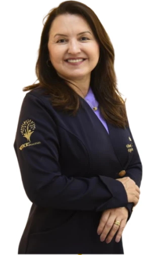
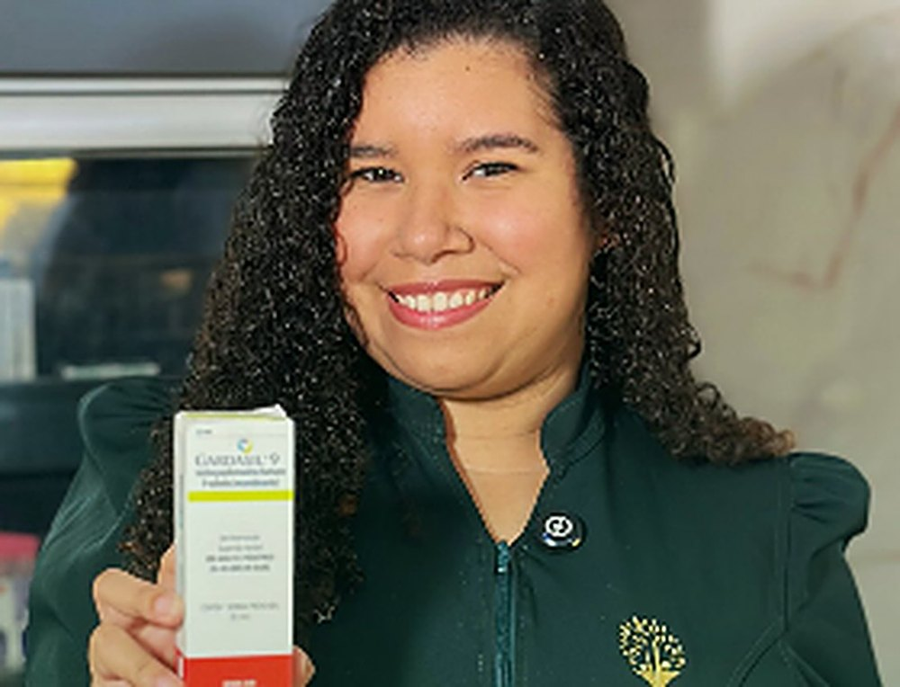
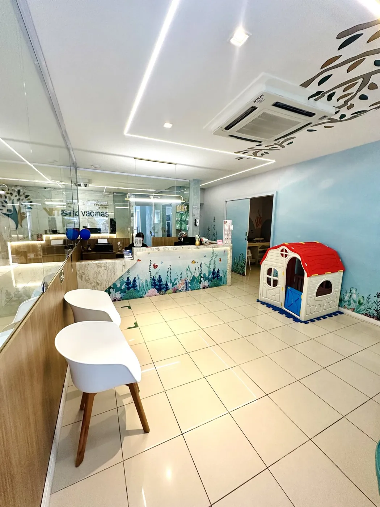
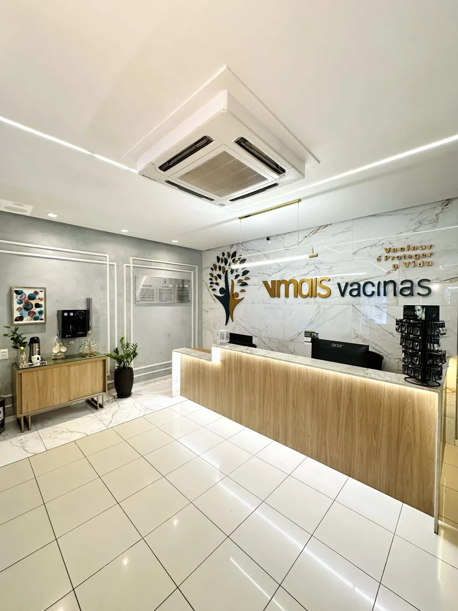
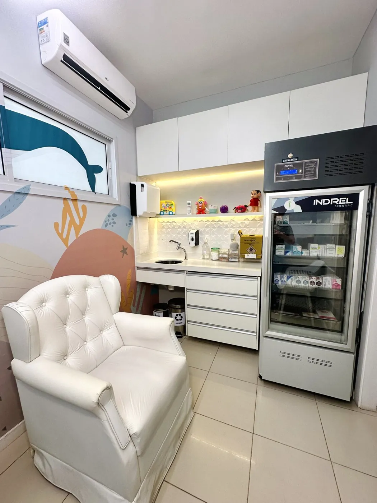
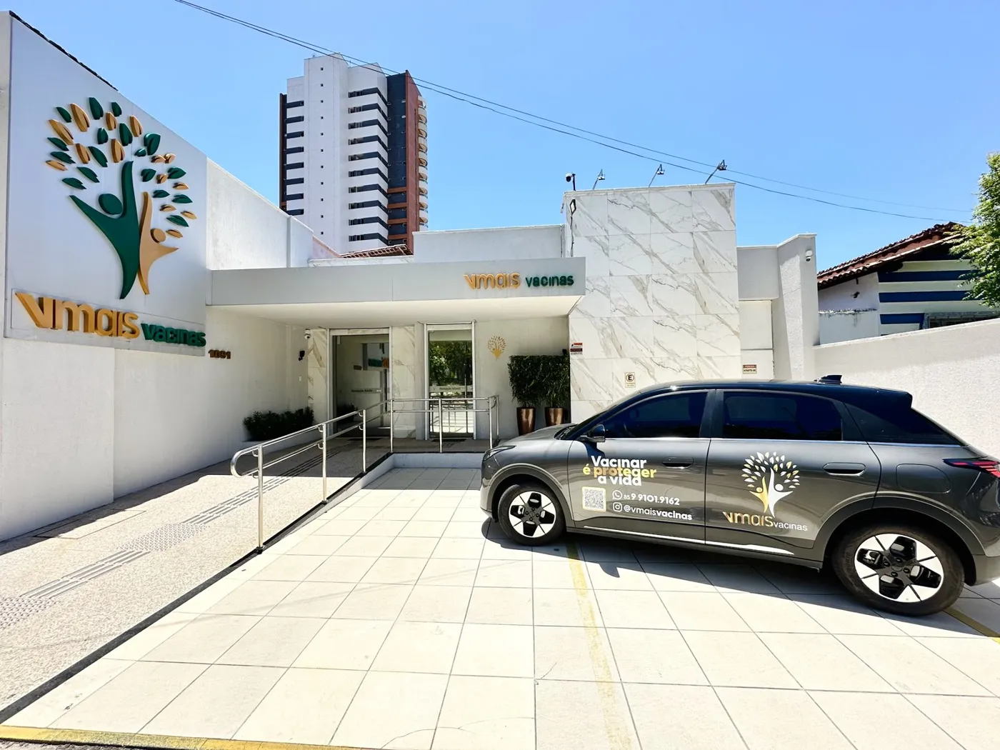
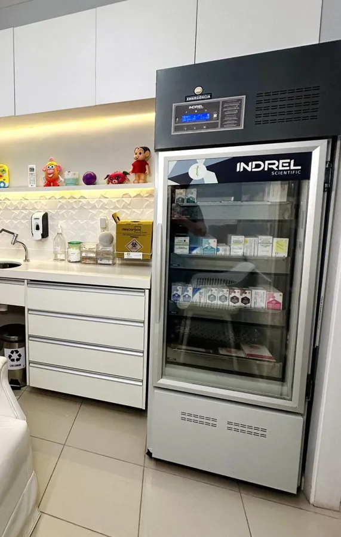

Dra. Vânia Lemos
Fundadora e Enfermeira
COREN-CE 157.129A VMais nasceu de um projeto coletivo com o ser humano no centro. Somos uma clínica de vacinas em Fortaleza que trata cada dose como um gesto de cuidado, para o bebê, para a família e para quem trabalha com você.

A VMais Vacinas é uma clínica de vacinação em Fortaleza criada para cuidar de pessoas em todas as fases da vida, do nascimento à maturidade. Unimos acolhimento, segurança e excelência para oferecer uma experiência de vacinação mais humana e tranquila.
Contamos com vacinas para bebês, crianças, adolescentes, adultos e idosos, além de orientação individualizada, acompanhamento da caderneta de vacinação e atendimento domiciliar com a VMais Domicílio.
Cada detalhe da VMais foi pensado para proteger o que mais importa: a sua saúde e a de quem você ama. Mais do que aplicar vacinas, queremos estar presentes na prevenção, no cuidado e na construção de uma vida mais saudável.
VMais Vacinas. Cuidado, prevenção e proteção em todas as fases da vida.
O nosso compromisso é servir ao próximo e difundir conhecimento no que diz respeito aos diversos tipos de vacinas e suas propostas de prevenção de doenças.
Buscar o engajamento das pessoas para se apropriarem do que a ciência desenvolve em prol da humanidade.

Nosso espaço infantil temático com elementos do fundo do mar ajuda a criar uma atmosfera imersiva promovendo uma experiência visual e sensorial envolvente criando um espaço divertido e acolhedor.

Um ambiente climatizado e acolhedor, pensado para oferecer conforto, privacidade e segurança na vacinação. Nossa equipe especializada garante um atendimento humanizado, cuidando da sua saúde em cada ciclo da vida.


Antes da dose, a equipe confere a caderneta e tira as dúvidas. Depois, explica as reações esperadas e quando volta a próxima dose.

Cada detalhe da nossa clínica foi cuidadosamente planejado para oferecer um ambiente acolhedor e humanizado. Valorizamos a acessibilidade como um pilar essencial, garantindo que pessoas com deficiência ou mobilidade reduzida possam transitar com liberdade e segurança. Nosso espaço é inclusivo, pensado para que todos se sintam bem-vindos, respeitados e cuidados.
Vacina é um produto biológico sensível e, fora da temperatura indicada, pode perder a capacidade de proteger. Na VMais, cada dose é armazenada em refrigeração própria para imunobiológicos, sempre na faixa segura.

Vídeo do armazenamento em breveTodo serviço de vacinação precisa ter um responsável técnico legalmente habilitado, como determina a Anvisa (RDC 197/2017). É ele quem responde pelos protocolos, pela conservação das vacinas e pela equipe.
